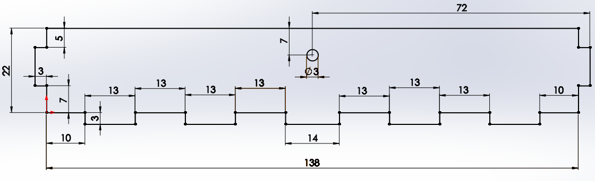
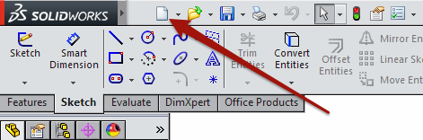
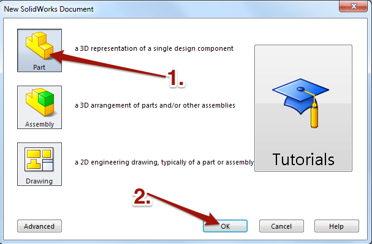
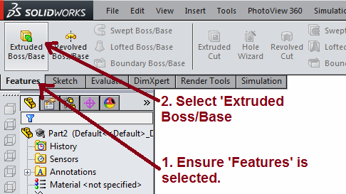
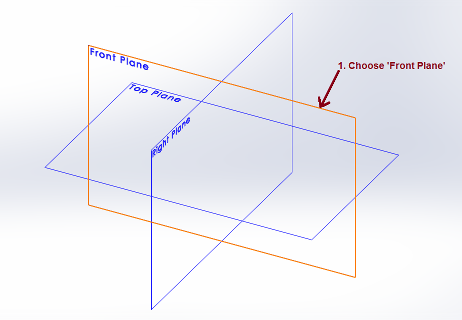
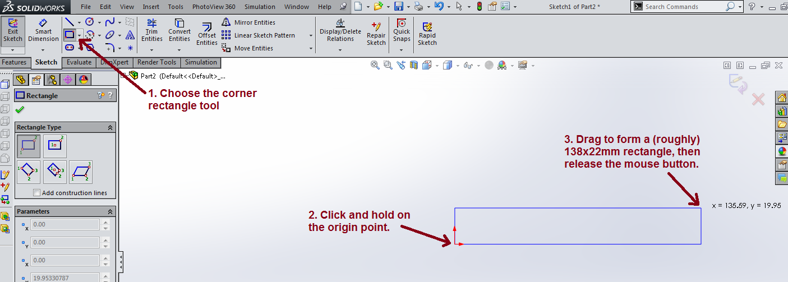
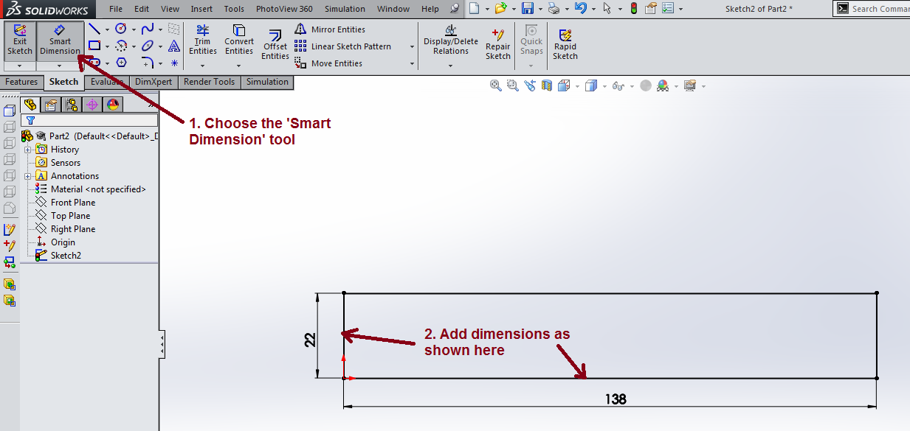
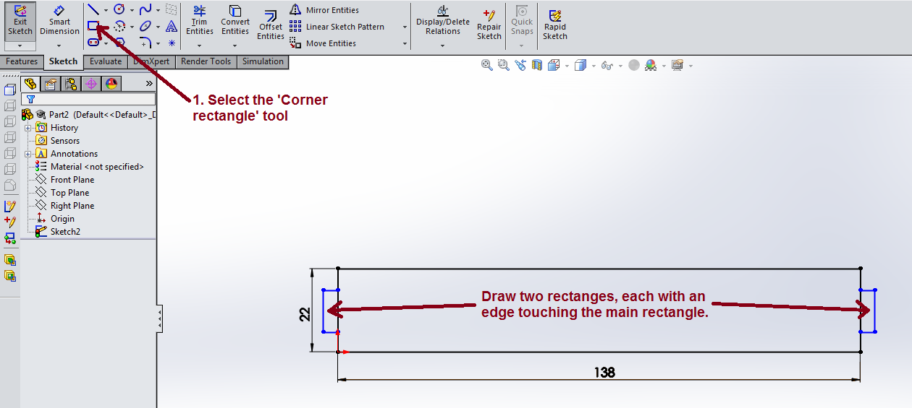

A Project Storage Box
Table of Contents
1 Part-y time
- Now that you've had some experience dimensioning and trimming Solidworks sketches, we're going to create a sketch of our own.
Design It
- Here is a picture of the piece we're trying to make.

- Open up Solidworks and create a new file.

- Choose the option to make a
Part. - Click
OK.

- Ensure the 'Features' tab is selected, then choose 'Extruded Boss/Base'.

- Now Solidworks will ask you to choose which
Planeyou want to start your sketch in. We'll choose theFront Planeby clicking on it.

- Ensure the 'Sketch' tab is selected, then locate the
Corner Rectangletool. - IMPORTANT: Whenever you start a new sketch, the very first shape you draw must start on the red 'origin' point to allow it to be fully defined. You'll notice a little orange circle appears as you hover your mouse over the point. Once here, click and hold the left mouse button.
- Drag the mouse up and to the right until the rectangle is approximately 138x22mm. We're going to add dimensions later, so you don't need to be too accurate.

- Choose the 'Smart Dimension' tool.
- Set the width to 138mm, and the height to 22mm.
- CHECKPOINT: In the bottom-right hand corner of the screen, you should see the words, 'Fully Defined'. If not, re-check you've followed all the steps above so far.

- Next we'll add some finger joints.
- Select the
Corner Rectangleagain. - Draw two rectangles on the sides of the main rectangle. These are going to be our finger joints. Make sure that one edge of your rectangle overlaps the main rectangle. The size isn't overly important, but aim for 3mm wide and about 10mm tall like in the picture below.
- You should see small green symbols. The first one shown means a point is
coincidentto a line. This is the same as saying it is touching the line. - The second green symbols shown indicate that two lines are
Vertical


- Now that the finger joints have been added, we need to dimension them. Add dimensions so that your sketch is fully defined, like the one below.

- We now need to add a cut out in our main shape.
- Use the centre rectangle tool to draw a rectangle near to the center of the large rectangle.
- Dimension it so that is is 3mmx12mm and 6mm from the top.

- Now we want to position the small rectangle in the Horizontal centre of the large rectangle.
- Click on the middle of the large rectangle, then hold down the Shift Key and click on the centre of the small rectangle.

- Now from the context menu on the left of the screen, choose to add a
Verticalrelationship. - Click the green tick. This will now ensure that the two rectangles are vertically aligned.

- Your sketch should now be fully defined and look like the image below.
- Trim the finger joints next.

- Exit your sketch.

- Now extrude the sketch by 3mm to make your finished part. Save it as Lid-Box-Front.

2 Creating a sketch from a design
Badge It - Gold 3D Designer
- To earn the Gold 3d Designer Badge
- Look at the sketch below.
- You need to draw, trim and fully define this sketch.
- Once you have completed that, extrude it by 3mm
- Take a screen shot of the full defined sketch and the 3d part for your portfolio.


3 Creating a sketch from a real part
Badge It - Platinum 3D Designer
- To earn the Platinum 3d Designer Badge
- Find the part that looks like the image below.
- Use a pair of calipers to measure the dimensions of the part carefully.
- Use SolidWorks to create your own sketch of the part and take a screenshot of it for your portfolio.
- Extrude the sketch to produce a 3D part and capture a screenshot for your portfolio.